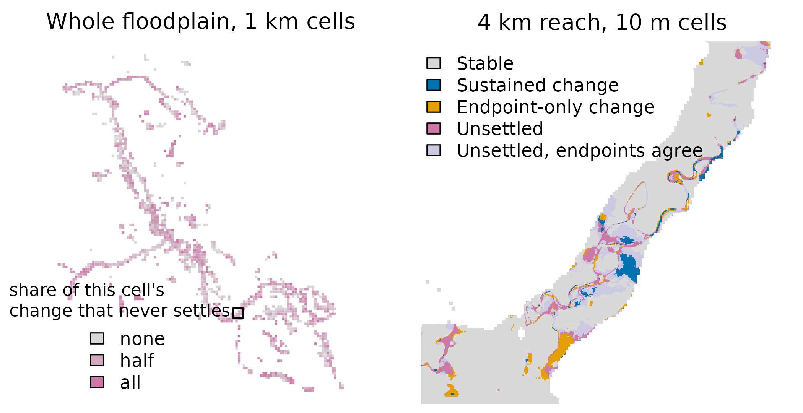

What a Land-Cover Change Figure Is Made Of
Source:vignettes/articles/temporal-composition.Rmd
temporal-composition.RmdA published floodplain land-cover change layer is a comparison of two years. For the Bulkley floodplain (BULK) it says that 4,625 ha — about 11% of the mapped floodplain — carried a different class in 2023 than in 2017. That number is the input to most things anyone wants to ask.
This article is about what is inside it. It is not about why land cover changed: attributing a patch to a dated fire or cutblock is a separate stage of the same production run, and its results are written up separately. What follows is the prior question — whether the change a two-year comparison reports is a change that stayed.
Looking at every year, not just the ends
The published series carries a classified raster for every year from 2017 to 2023, not only the two endpoints. So each pixel can be read as a seven-year sequence rather than a before-and- after pair, and sorted by how it behaves:
- Sustained change — the class switches once, and holds for at least two years on each side.
- Endpoint-only change — the class switches once, but one endpoint year is the only year that differs. A real change in the final year of the series looks exactly like this, so it is not the same thing as an error.
- Unsettled — the class changes more than once and never settles.
A fourth group matters too: pixels that flicker between classes but happen to hold the same class in 2017 and 2023. A two-year comparison cannot see them at all.

One 1.44 ha patch of the Bulkley floodplain mapped as Trees in 2017 and Rangeland in 2023, shown for each year of the series. The outline is the patch; classes are Esri IO LULC. The patch was selected by rule, not by eye: of 21,701 change patches, 4036 are Trees to Rangeland, 194 of those are 1 to 4 ha, and 52 of those carry all three temporal categories at 10% or more of their cells. This is the most evenly split of the 52.
The patch above is mapped as Trees in 2017 and Rangeland in 2023, so the published layer counts all 1.44 ha of it as tree loss. Reading across the years, only part of it behaves that way.
The same split across a whole floodplain

Bulkley floodplain change by temporal category. Left: the whole floodplain, aggregated to 1 km cells and shaded by the share of that cell’s changed area that never settles; the box marks the detail at right. Right: a 4 km reach at the mapped 10 m resolution. The floodplain is the drawn area — there is no basemap, so nothing outside the mapped extent is shown.
Across the whole Bulkley floodplain, 19.7% of the changed area is a sustained switch. 36.4% turns on a single endpoint year, and 44% never settles. Separately, 3,186 ha — 7.76% of the floodplain — flickers between classes while reading identically in 2017 and 2023.
Does Bulkley generalise?

Temporal composition of change in the four watershed groups that publish a complete 2017-2023 series, for all change (left) and for tree loss alone (right). Tree loss is every Trees to non-Trees transition except Trees to Clouds, with no patch-size threshold. Four groups is not a sample; the panel shows that the ordering holds and the magnitude moves.
The sustained share runs from 19.7% to 31% across the four groups, and the unsettled share from 39.6% to 48.5%. The magnitude moves, and in every group the unsettled share is the largest of the three. It is not a fixed ordering below that: sustained change is the smallest category in three groups but not in NECR, where endpoint-only change is slightly smaller.
For tree loss the picture is the same shape but shifted: sustained shares of 16-35%. Shares are quoted rather than hectares because the two are not equally robust — excluding Trees to Water alone moves the sustained share by up to 6 points, which is why the class set is stated in the caption.
Two totals circulate for Bulkley tree loss, and they measure different populations. The published item property
gross_loss_hais 1,565.1 ha: patches, after a 1 ha sieve and a sub-basin clip. The pixel-level total behind the shares above is 2,050.4 ha, with no sieve and no clip. The ratio between them is the sieve, not a disagreement — it was reconciled separately.
What this means for a quoted hectare
| Group | Floodplain (ha) | Change 2017-2023 (ha) | Sustained (%) | Endpoint-only (%) | Unsettled (%) | Stable but flickering (ha) |
|---|---|---|---|---|---|---|
| BULK | 41,090 | 4,625 | 19.7 | 36.4 | 44.0 | 3,186 |
| NECR | 41,838 | 5,779 | 31.0 | 29.4 | 39.6 | 3,828 |
| LNTH | 16,002 | 1,630 | 20.6 | 31.0 | 48.5 | 1,577 |
| KOTL | 69,378 | 3,538 | 24.7 | 33.1 | 42.3 | 2,236 |
A hectare figure from a two-year comparison is not wrong, but it answers a narrower question than it appears to: how much area carried a different label in the second year. On these four floodplains, between a fifth and a third of that area is change that stayed put for at least two years on each side. Where the question is durable land-cover change, the sustained share is the number to reach for — and where it is disturbance extent in a particular year, the endpoint-only share matters, because a genuine final-year change lives there.
What this does not support
Four groups is not a sample, and nothing here is a statistical inference; the four are simply the groups that publish a complete series. Two of them were produced through a different processing path than the other two and return lower unsettled fractions, so processing and landscape cannot be separated at this size. And an endpoint-only switch is not evidence of a labelling error: a real change in the last year of the series produces exactly the same signature, and this method cannot tell the two apart.